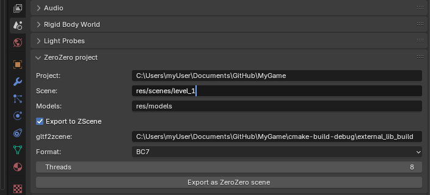
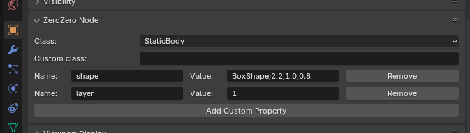
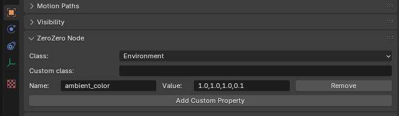

- Generated on ven. nov. 15 2024 15:53:50 for ZeroZero by
 1.7.0
1.7.0
|
ZeroZero
v0.0
An experimental 3D Engine
|
Since ZeroZero does not have an editor a Blender add-on is provided to edit ZeroZero properties of scenes nodes and export a Blender scene to a ZeroZero JSON+GLB or JSON+ZSCENE scene.
The add-on support Blender 4.2 and newer version.
src/tools/blender/blender_zero_zero.pyOnce installed the add-on add properties to the Blender's scene and the Blender's nodes.
The ZeroZero scene properties are located in the ZeroZero project section of the Blender scene properties : 
The following properties can be edited :
The Export as ZeroZero scene button exports the Blender scene in JSON+GLB format.
If the Export to ZScene option is activated, the GLB file is converted into a ZScene file then deleted. Refers to File formats for the description of the file formats.
The ZeroZero node properties are located in the ZeroZero Node section of the Blender node properties : 
Here you can change the node class with a ZeroZero built-in class or input a custom class name (must be registered with the Z0_REGISTER_TYPEmacro in the game).
You can add a property with the Add Custom Property button. Each property must have a Name and a Value. $$ can be used in the Value field to refer to the selected node name. This properties must be supported by the setProperty function of the corresponding class.
The following objects properties are exported in the GLB or ZScene file, you don't have to add them :
You can create lights in the ZeroZero scene using empty nodes (see below) but you can also create them with Blender lights object.
All Blender light object are automatically converted to ZeroZero z0::Light nodes. The following blender properties are used during the export :
You can add Empty, Plain axes nodes in blender to add any ZeroZero node in the final scene.
Example for a z0::Environment node :

1.7.0